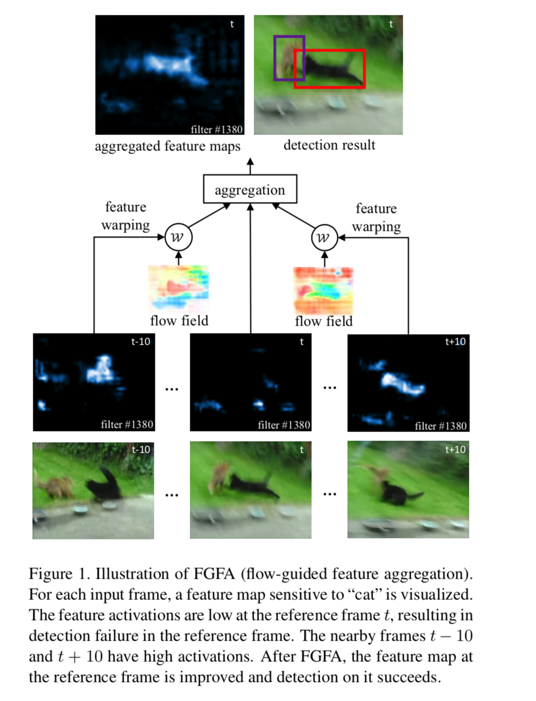

Flow-Guided Feature Aggregation for Video Object Detection
URL:https://arxiv.org/pdf/1703.10025.pdf
这篇论文是MSRA daijifeng组的研究工作，主要提出了一种神经网络结构来进行视频中的物体识别，视频中的物体检测典型的特征就是有些帧的物体因为运动模糊、遮挡、奇怪的pose导致难以检测，但是这个帧的附近帧中可能物体是处于一个正常的状态，因此论文考虑通过整合多帧信息来提高物体检测的效果，从而提出了FGFA (flow-guided feature aggregation) 网络。
下面这张图是简单的case，可以比较直接的描述论文想要解决的问题：
FGFA整个模型可以分成四个部分：
- Flow network： 这一部分主要利用Flying Chairs Dataset预训练的FlowNet;
- Feature network：这一部分主要利用ResNet-50、ResNet101和Deformable CNN，在基础上对模型结构做了一定的修改去掉了最后的average pooling、fc以及一些其他细节操作;
- Embedding network：这一部分包含三个卷积层：1x1x512、3x3x512、1x1x2048;
- Detection network：这一部分主要利用RFCN网络;
模型大体的Pipeline是对于当前帧I，给定临近帧的范围K，那么首先利用Feature network对临近帧进行特征提取，对于每一个临近帧J用Flow network计算与帧I的flow field，再利用双线性warp函数整合flow field和帧J对应的feature map进行flow-guided warp，最后结果将作为帧I特征聚合的一部分。帧I特征的聚合主要涉及权重矩阵的计算，权重矩阵的计算主要利用Embedding network对flow-guided warp的结果和原始的feature map进行特征整合，然后利用输出的特征计算对应的权重矩阵，具体的计算过程论文中的伪代码写的比较清楚，最后聚合所有2K个临近帧的特征作为Detection network的输入得到最后的检测结果.
伪代码：
整个PipeLine的描述：

本博客所有文章除特别声明外，均采用 CC BY-NC-SA 4.0 许可协议。转载请注明来自 Out of Memory！